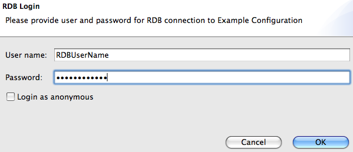

RDB Table Editor Usage
The following assumes that
configuration files
have been prepared.
Open RDB Table Editor
The RDB Table Editor is launched by opening
an existing configuration file in the Navigator.
Either double-click on a file ending in ".rdb",
or right-click and select Open With; RDB Table Editor.
RDB Login
While some configuration files might contain a user and password
necessary to connect to the RDB, other configuration files might
not contain that information and instead require each user to log
on individually.
In the latter case, a dialog will appear that prompts for the
user and password:

Editing
This is an example screenshot of the RDB Table editor:
Note that all editing is local until you "save" the changes, i.e. write them to the RDB.
Modifying Cells
In the table editor, modify selected cells by clicking the cell and entering
a new value.
Rows with modified cells will be highlighted in yellow, and a tool-tip will
also indicate that the row was changed
Note that the first, leftmost column contains a "key" that's used to
identify the row in the RDB.
In the screenshot it's the "ID" column.
You can only change that "key" for newly added rows (see below),
not for existing rows.
Adding Rows
Add new rows by opening the context menu (right-click in table)
and selecting  "Add".
The new row will look like the bottom row in the screenshot,
where you can now enter the individual cell values, including the
"key" which must usually be unique, i.e. different from other rows.
"Add".
The new row will look like the bottom row in the screenshot,
where you can now enter the individual cell values, including the
"key" which must usually be unique, i.e. different from other rows.
Deleting Rows
Select the rows, then mark them for deletion via the
context menu (right-click in table)
and selecting  "Delete".
Rows marked for deletion will have a grey background like the one with ID 386
in the screenshot, and a tool-tip will also indicate that the row was marked
for deletion.
"Delete".
Rows marked for deletion will have a grey background like the one with ID 386
in the screenshot, and a tool-tip will also indicate that the row was marked
for deletion.
Saving Changes to the RDB
To write new rows, cell modifications or row deletions to the RDB,
"save" the changes via the  File/Save menu.
When simply closing the editor window you will also be prompted to
save pending changes.
File/Save menu.
When simply closing the editor window you will also be prompted to
save pending changes.